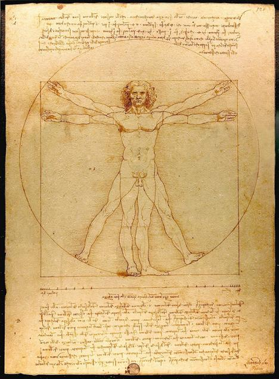

Arrière de l’âge
Certains commencent la puberté plus tôt, d'autres plus tard. Les deux cas sont souvent normaux.
🫀 Physique
Espace bien être et développement des jeunes

La puberté provoque des changements dans tout le corps, pas seulement à un endroit. Ils sont causés par des hormones qui se mettent en action.
Certains commencent la puberté plus tôt, d'autres plus tard. Les deux cas sont souvent normaux.
Il existe des différences, mais les deux vivent des transformations importantes. L’essentiel est de respecter ton propre rythme.
Le poids et la silhouette évoluent. Certaines personnes prennent du muscle, d'autres du gras — tout dépend de ton corps.
Prendre soin de ton corps aide à te sentir mieux. Ces gestes simples sont utiles chaque jour.
Oui. La plupart des adolescents ont des boutons à un moment ou un autre. La peau s'adapte, et cela peut durer plusieurs mois.
Les hormones poussent le corps à produire des poils dans de nouvelles zones. C'est un signe que la puberté progresse.
Chaque corps a son propre rythme. Si tu as des doutes, une visite chez un médecin ou un infirmier scolaire peut te rassurer.